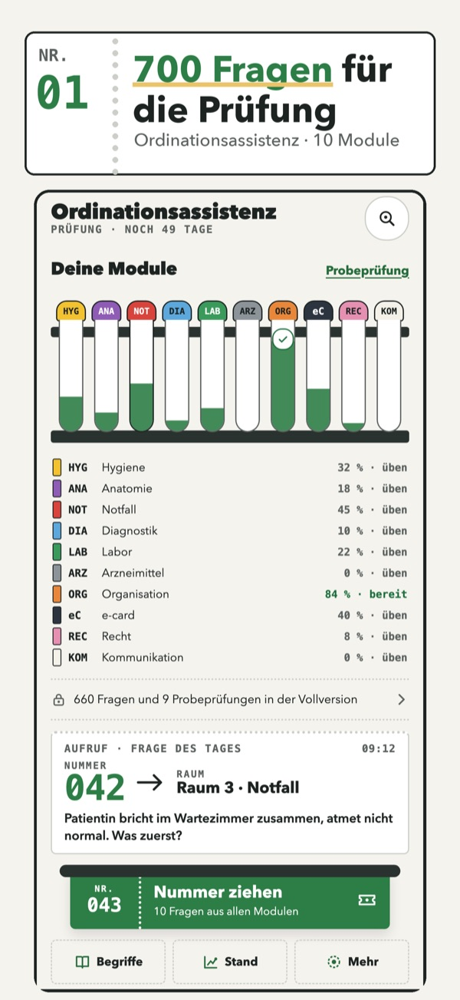
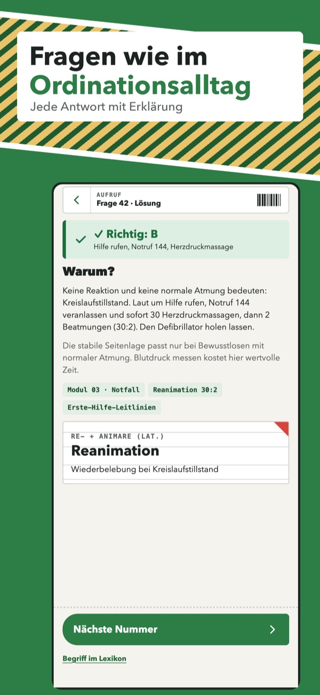
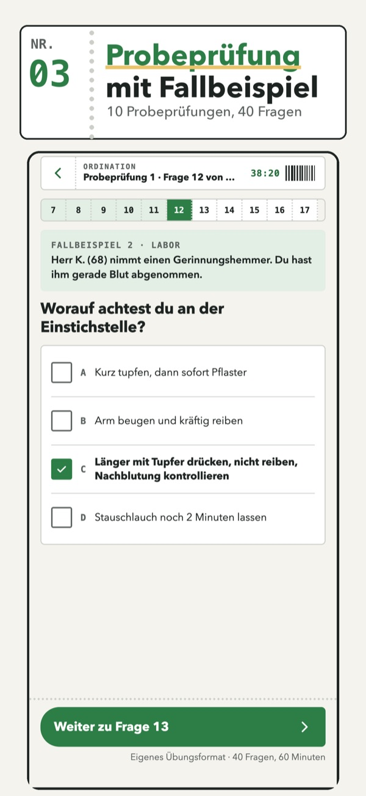

Ordinationsassistenz Prüfung
Fragen, Probeprüfung, Begriffe
Einmal kaufen – kein Abo. Ordinationsassistenz Prüfung begleitet dich durch den Kurs bis zur kommissionellen Abschlussprüfung: Hygiene und Aufbereitung, Anatomie, Erste Hilfe, Labor, e-card und Abrechnung, Recht und Kommunikation. Die Startseite ist ein Röhrchenständer: jedes Röhrchen ein Modul, der Füllstand zeigt, was du schon kannst.



- 700 eigene Fragen in 10 Modulen, mit Erklärung
- Jede Frage wird aufgerufen wie im Wartezimmer: Nummer, Raum, Antwort
- 10 Probeprüfungen mit Fallbeispielen aus dem Ordinationsalltag
- 30 Fallbeispiele: Blutabnahme, Notfall, e-card, Hygiene
- 400 Fachbegriffe als Karteikarten: Latein und Deutsch
- Abläufe Schritt für Schritt: Aufbereitung von Medizinprodukten, e-card
- Hilfe für Deutsch als Zweitsprache: einfache Erklärungen
- Offline und ohne Konto, Fortschritt per iCloud, Widget mit Prüfungstermin
Bald im App Store
Hilfe · Datenschutz